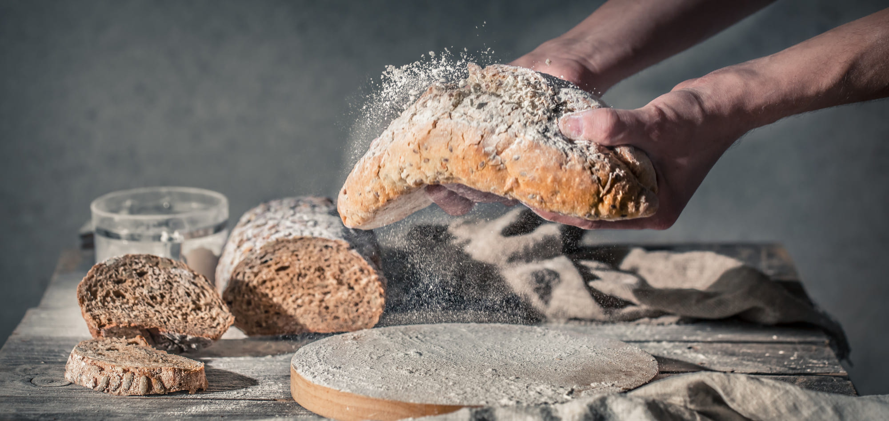
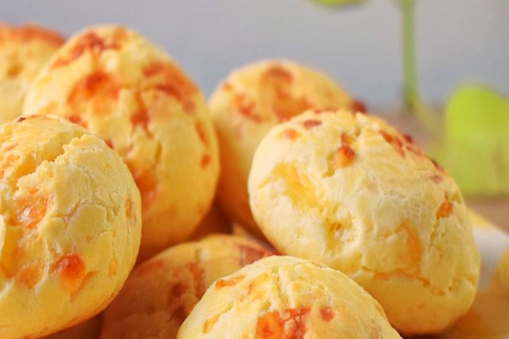
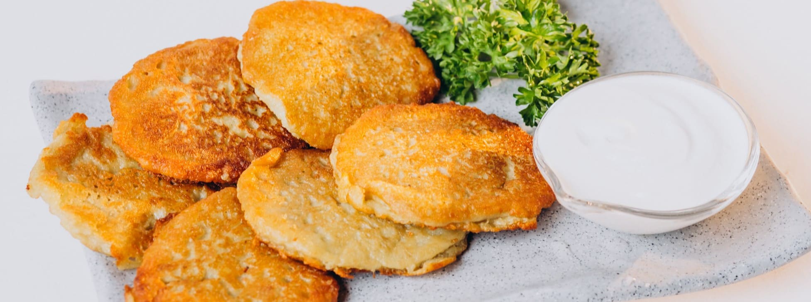
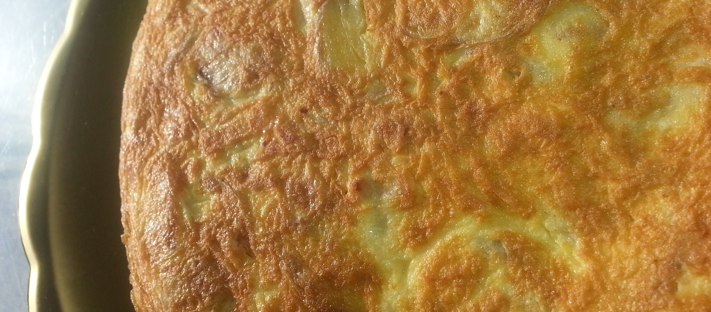

Recetas saladas

Pan sabarizados
- 1. Poner sobre la mesa la harina en forma de corona y en el centro hacer un hueco y colocar la levadura fresca desgranada, la cda. De azúcar y la manteca blanda.
- 2. Sobre los costados de la corona colocar la sal, es muy importante que no tome contacto con la levadura.
- 3. De a poco ir volcando sobre los ingredientes del medio el agua e integrar con la harina hasta formar el bollo que casi no se pegue a las manos, debe quedar de una consistencia chiclosa pero que se pueda amasar.
- 4. Agregar los ingredientes elegidos para saborizar, luego golpeamos y amasamos el bollo por algunos minutos sobre la mesa. De ser necesario agregar un poco más de harina.
- 5. Dejamos leudar el bollo tapado flojamente en un lugar templado y sin corrientes de aire hasta duplicar el volumen.
- 6. Luego hacemos los bollitos del tamaño deseado, es aconsejable no hacerlos muy grande más o menos un poco más grande que una nuez.
- 7. Para lograr bollitos bien redonditos, debes apretar la masa con el puño y cortar la masa que asoma, luego terminar de dar forma al bollito haciéndolo girar debajo de la palma de la mano semicerrada sobre la mesa apenas enharinada diría que casi nada.
- 8. Acomodarlos sobre una placa enmantecada un poco separados entre si y dejar leudar nuevamente tapados flojamente con un paño hasta duplicar su volumen y estén bien hinchaditos.
- 9. Batir un huevo y agregarle un chorrito de leche. Pincelar cada pancito y luego espolvorearlos con un poco de pimentón dulce.
- 10. Cocinar en horno precalentado a 200º de 10 a 15 minutos aproximadamente. Los pancitos deben estar bien doraditos.
Chipá
- 1. Primero pre calentás el horno a 180°.
- 2. Ponés a hervir el agua con la leche, la sal y el aceite. Apenas empiece a hervir apagás el fuego y añadis la fécula de una, se hace un engrudo tremendo pero vos seguí mezclando con una cuchara de madera.
- 3. Dejás que se enfrie un toque (podés pasar la mezcla a un bowl si querés hacerlo más rápido) y le agregás el huevo. Se va a hacer un quilombo de nuevo, pero vos mezclá.
- 4. Por último le añadís el queso, unis todo y untandote un poco de aceite en las manos, empezás a hacer las bolitas.
- 5. Podés hacerlas más grandes para que sean tipo el “pao de queijo” brasilero o más chiquitas para los chipá clásicos.
- 6. Los ponés en una fuente para horno, dejando espacio entre ellos porque crecen, y los horneás durante unos 20 o 25 minutos, o hasta que los veas bien dorados.
- 7. Los dejás enfriar un toque (sí podés) y listo, a disfrutar de la receta de chipá caseros!


Torta frita
- 1. Formar un volcán con la harina, el azúcar, la sal y la levadura
- 2. Sumar en el centro los huevos, el agua a temperatura ambiente y la grasa o margarina blanda y los huevos. Unir los ingredientes centrales, incorporando de a poco la harina de los costados. Amasar hasta lograr un bollo liso.
- 3. Cubrir con polietileno y dejarla descansar 30 minutos en la heladera. Retirar, estirar la masa hasta que quede de 2 milímetros de grosor.
- 4. Cortar en cuadrados o medallones. Pinchar con un tenedor o hacer un agujero con el dedo en el centro de cada uno.
- 5. Freír las tortas en una cacerola con aceite o grasa no muy caliente, dándolas vuelta en la mitad de la cocción para que se doren parejo. Escurrirlas sobre papel absorbente. Espolvorear con azúcar.
Tortilla de papa rellena
- 1. Primero vamos a pelar las patatas, las enjuagamos bien con agua y seguidamente las picamos en trozos pequeños y reservamos. Pelamos y picamos también la cebolla y reservamos.
- 2. Ponemos abundante aceite de oliva a calentar en una sartén a fuego medio-fuerte y cuando se encuentre ya caliente, agregamos las patatas picaditas, la cebolla y una pizca de sal.
- 3. Cocinamos durante 10-12 minutos removiendo todo el conjunto con bastante frecuencia para evitar que la patata se pegue.
- 4. Cuando la patata ya se encuentre completamente hecha, la sacamos con una espumadera, escurriéndola bien y la transferimos a un bol, donde con la ayuda de un tenedor, la aplastaremos ligeramente sin llegar a convertirlo en puré, más bien patata aplastada con tropezones, la intención es que no queden trozos de patata grandes.
- 5. En otro recipiente batimos los huevos junto con una pizca de sal. Añadimos la patata aplastada que acabamos de hacer y mezclamos todo hasta que quede bien integrado
- 6. Dejamos reposar 5 minutos para que la patata absorba parte del huevo, así quedará mucho más rica y jugosa.
- 7. Ponemos unas gotas de aceite de oliva a calentar a fuego medio-alto en una sartén mediana. Añadimos aproximadamente la mitad de la de la mezcla que hemos preparado de patata y huevo, tratando de extenderla bien para que quede uniforme.
- 8. Inmediatamente, colocamos una capa de jamón cocido en lonchas y otra capa de queso en lonchas, la cantidad como ya he comentado, es a gusto de cada uno.
- 9. Ahora añadimos el resto de la mezcla y la extendemos de nuevo hasta que todo quede bien cubierto.
- 10. Cocinamos nuestra tortilla durante 3-4 minutos a fuego medio hasta que se cuaje por la parte de abajo y luego, giramos la tortilla con cuidado pero con decisión. Yo me ayudo de una tapa grande que tengo de una cazuela.
- 11. Cogemos la sartén por el mango, le damos unos movimientos giratorios para que la tortilla se asiente perfectamente y cocinamos durante 4-5 minutos más hasta que quede cuajada a nuestro gusto.
- 12. Ahora ya podemos retirar la tortilla del fuego y servirla caliente o esperar a que se atempere un poco. Buen provecho!!

Buñuelos de acelga
- 1. Lave las hojas de acelga en varias aguas.
- 2. Coloque en una cacerola profunda las hojas sin el tallo, con el agua del lavado, condimente con sal y tape la cacerola para que se cocine al vapor.
- 3. Cuando esta tierna retire, deje enfriar y escurra.
- 4. Pique la acelga y mezcle con la harina con el polvo de hornear, los huevos, queso rallado y condimente con sal, pimienta y nuez moscada.
- 5. Fría los buñuelos en aceite caliente, escurra en papel absorbente y sirva.
- 6. Con los tallos, hiérvalos en agua y sal, cuele y dispóngalos en una asadera .
- 7. Funda 100 gs de manteca y procese con un diente de ajo y 4 filetes de anchoas rocíe las pencas y esparza por encima pan rallado con queso en partes iguales. (200 gs)
- 8. Gratine al horno.